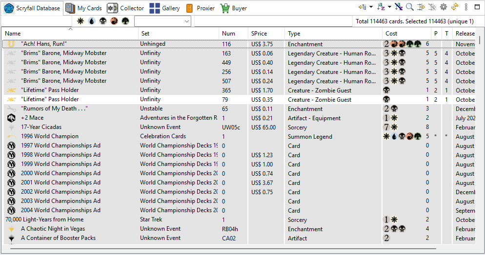

The Scryfall Database view lists every card printing in the card database: one row per printing, so a card reprinted in ten sets has ten rows. It is the place to look for cards, whether you own them or not.

Everything on this page also works in the other card lists (My Cards, a deck, a collection, the Collector...).
Group By groups the rows, for example by set, by color, by type or by rarity, and shows the groups as a tree. Each group shows its card count and totals. Choose None to go back to a flat list.
Each deck and collection keeps its own grouping. To go back to a view's default grouping and sort order, use Restore Defaults on its page in ; for the Deck or Collection page, that resets every deck or every collection.
You can define your own grouping combinations in ; they appear in the Group By menu.
What each column means: Columns reference.
View As (toolbar menu) changes how the list is shown:
| Mode | What you see |
|---|---|
| Table | A flat list of rows. |
| Tree | The groups as a tree (with Group By). |
| Split Table | The groups on one side, the cards of the selected group on the other. |
| Gallery | The card images (see The Gallery). |
Each deck and collection remembers its own View As choice.
Type a name in the quick filter bar above the list, use Find..., or open the full filter dialog. See Searching and filtering.
The view's toolbar menu also has Update Card Database (see Updating the card database).
See also: Searching and filtering · Columns reference · Adding and editing cards